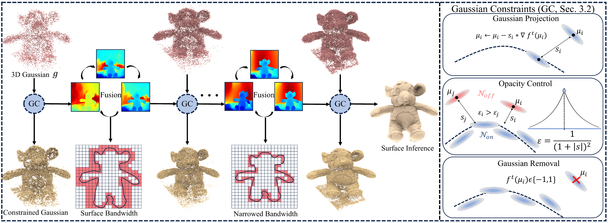
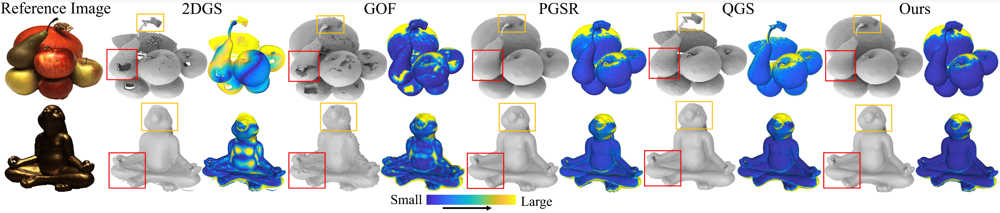

Rendering 3D surfaces has been revolutionized within the modeling of radiance fields through either 3DGS or NeRF. Although 3DGS has shown advantages over NeRF in terms of rendering quality or speed, there is still room for improvement in recovering high fidelity surfaces through 3DGS. To resolve this issue, we propose a self-constrained prior to constrain the learning of 3D Gaussians, aiming for more accurate depth rendering. Our self-constrained prior is derived from a TSDF grid that is obtained by fusing the depth maps rendered with current 3D Gaussians. The prior measures a distance field around the estimated surface, offering a band centered at the surface for imposing more specific constraints on 3D Gaussians, such as removing Gaussians outside the band, moving Gaussians closer to the surface, and encouraging larger or smaller opacity in a geometry-aware manner. More importantly, our prior can be regularly updated by the most recent depth images which are usually more accurate and complete. In addition, the prior can also progressively narrow the band to tighten the imposed constraints. We justify our idea and report our superiority over the state-of-the-art methods in evaluations on widely used benchmarks.

Overview of our method. Given 3D Gaussians $g$, we employ a distance field specified by a fused TSDF grid as our prior $f^{t}$. With $f^{t}$, we define a bandwidth by the surface and iteratively refine $f^{t}$ with updated depth renderings. We also apply Gaussian geometric constraints $(\mathrm{GC})$ that are related to interpolated distance $s$, centers $\mu$ and gradients $\nabla f^{t}$ for high fidelity surface reconstruction.

@article{noda20263d,
title={3D Gaussian Splatting with Self-Constrained Priors for High Fidelity Surface Reconstruction},
author={Noda, Takeshi and Liu, Yu-Shen and Han, Zhizhong},
journal={arXiv preprint arXiv:2603.19682},
year={2026}}